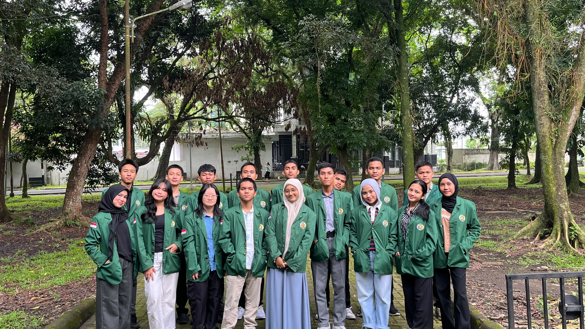
Selamat datang di website edukasi tata cara dan tata krama penggunaan Bus Trans Metro Deli!
Website ini dikembangkan sebagai media informasi dan edukasi bagi masyarakat, khususnya pengguna transportasi umum di Kota Medan.
Melalui website ini, pengunjung dapat mempelajari tata cara menggunakan Bus Trans Metro Deli, mulai dari memantau posisi bus, menunggu di halte, melakukan pembayaran, hingga turun di halte tujuan dengan benar.
Selain itu, website ini juga menyediakan informasi mengenai etika selama berada di dalam bus, hal-hal yang dianjurkan dan perlu dihindari, serta video tutorial untuk membantu pengguna memahami proses penggunaan bus dengan lebih mudah.
Tujuan dikembangkannya website ini adalah untuk meningkatkan pemahaman masyarakat tentang penggunaan transportasi umum yang tertib, aman, nyaman, dan bertanggung jawab.
Kami berharap website ini dapat menjadi sumber informasi yang bermanfaat sekaligus mendorong terciptanya budaya menggunakan transportasi umum yang lebih baik.
Terima kasih telah mengunjungi website kami. Semoga informasi yang disajikan dapat memberikan manfaat bagi setiap pengunjung!
Saat ingin menaiki bus, pantau posisi bus yang menuju halte Anda menggunakan link Apeksi. Perhatikan nomor bus, halte tujuan, dan jam keberangkatan.
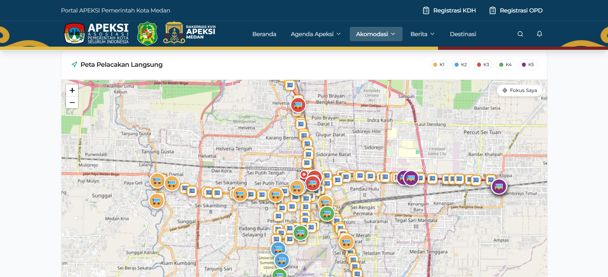
Penumpang wajib menunggu di Halte atau Titik Pemberhentian Bus (TPB) resmi. Bus tidak akan berhenti untuk menaikkan atau menurunkan penumpang di sembarang tempat
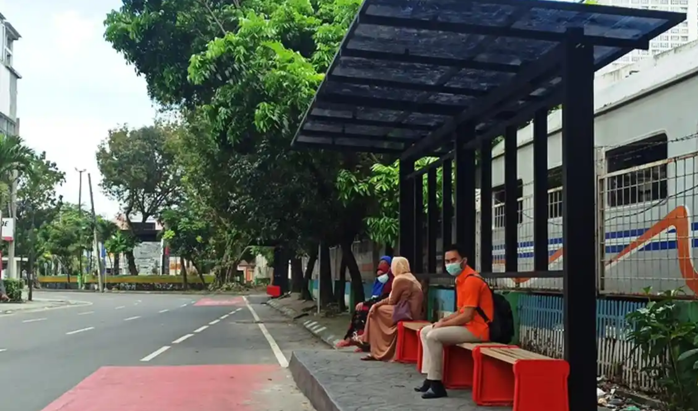
Saat bus tiba di halte, jangan langsung naik. Utamakan penumpang yang turun dari bus, lalu kalian boleh naik.
Pembayaran bersifat 100% non-tunai, jadi siapkan kartu uang elektronik kalian
| Jenis Pembayaran | Kompatibilitas |
|---|---|
| Kartu e-Money | ✅ |
| QR Code e-Wallet | ✅ |
| QRIS Tap | ✅ |
| Tunai | ❌ |
Setelah berhasil melakukan pembayaran, silahkan pilih tempat duduk yang nyaman jika masih tersedia atau berdiri di area yang tidak mengganggu kenyamanan penumpang lain.
Saat bus sudah dekat dengan halte tujuan anda, tekan tombol peringatan untuk memberi tahu sopir bahwa anda akan turun. Kemasi barang anda, jangan sampai ada barang yang tertinggal.
Saat bus tiba di halte tujuan, segera turun agar tidak menghalangi penumpang lain yang ingin naik.
Klik atau sentuh untuk mempelajari lebih lanjut
Jangan duduk di kursi yang ditandai dengan
"Kursi Prioritas" yang bertanda khusus
(Biasanya berwarna merah).
Klik atau sentuh untuk mempelajari lebih lanjut
Jika harus berdiri, jangan menghalangi jalan atau area yang dapat mengganggu kenyamanan penumpang lain.
Klik atau sentuh untuk mempelajari lebih lanjut
Hindari mengobrol terlalu keras atau memutar video/musik yang dapat mengganggu kenyamanan orang lain yang berada di dalam bus.
Klik atau sentuh untuk mempelajari lebih lanjut
Berdirilah menghadap ke depan atau ke samping, Jangan berdiri dengan cara yang mengganggu penumpang lainnya.
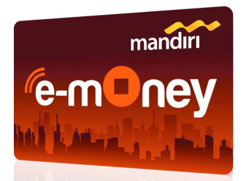
Siapkan Kartu e-Money/e-Wallet
Pantau Rute lewat Aplikasi
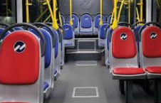
Dahulukan Penumpang Prioritas
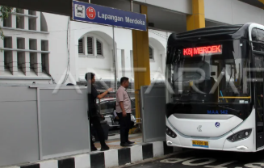
Tertib Antre di Halte
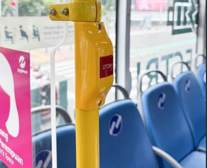
Tekan tombol pada tiang jika halte tujuan sudah dekat
Jaga barang bawaan anda agar tidak mengganggu penumpang lain
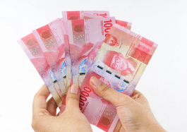
Jangan Bayar Tunai
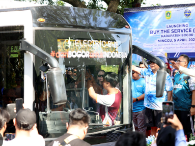
Jangan Cegat Bus di Sembarang Jalan
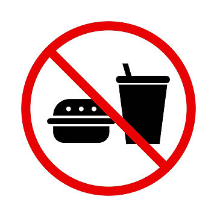
Jangan Makan/Minum di Dalam Bus
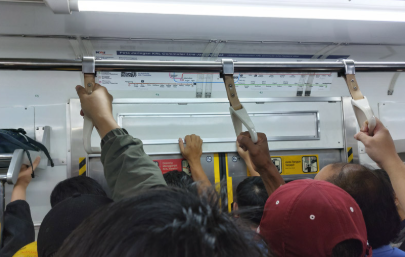
Jangan Berhenti Mendadak di Pintu
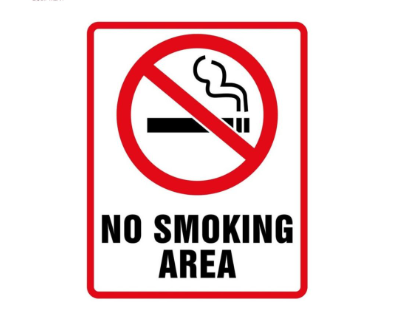
Jangan merokok, vape, atau barang sejenisnya
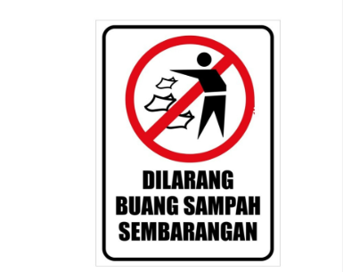
Jangan meninggalkan sampah di dalam Bus